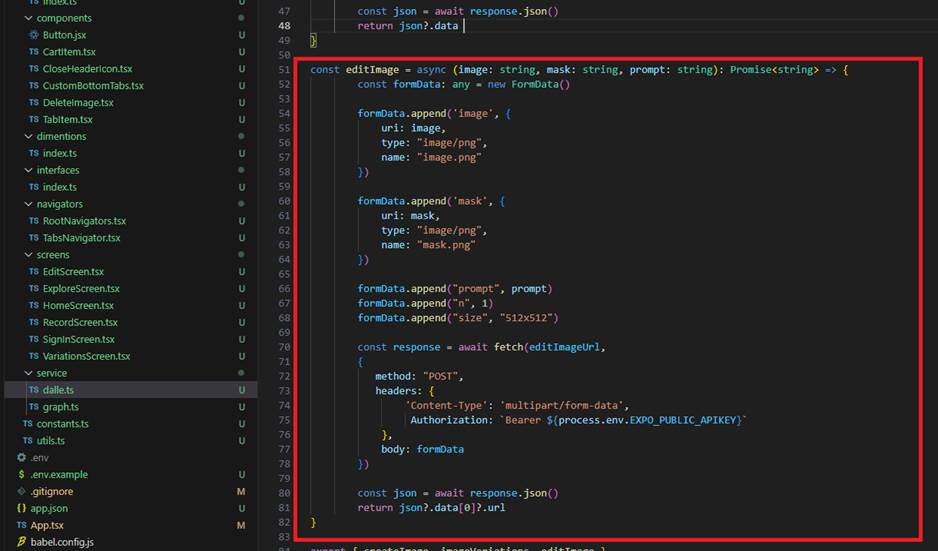
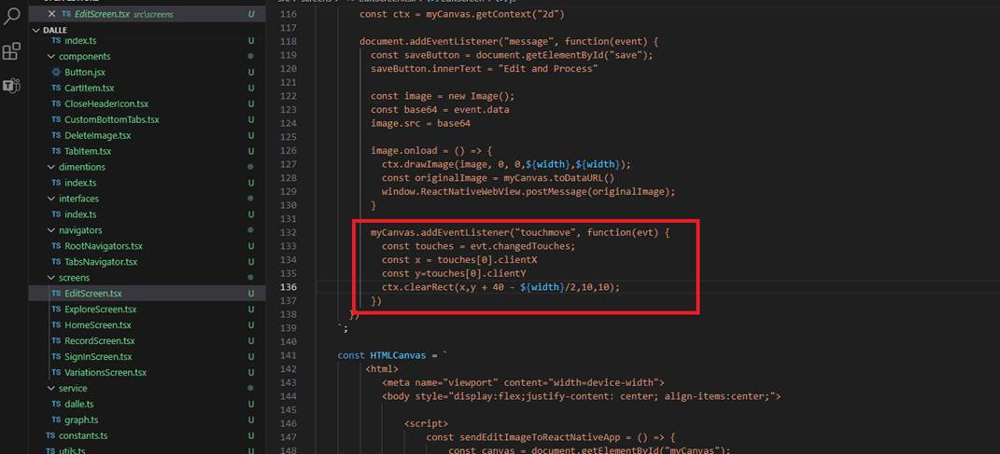

Mobile (React Native with Expo) DALL-E Image Gallery with Variations and Edit
Vide Link: https://youtu.be/r6PaBO7P_8U
GitHub Repository:
This is an extension of my previous DALL-E Image Gallery app, which can be found at https://github.com/Ashot72/Mobile-DALL-E-Image-Gallery
With this app, you can generate various image variations and edit images with your finger to generate multiple images sequentially.
In the previous app, you can observe how we registered the app, accessed different tenants with multiple users, and built it.
Figure 1
In this app, we will not only generate images but also create variations and edit them.
Figure 2
From the main image we can create variations.
Figure 3
If you look at the API, you will see that we need to pass the original image and the number of images we want to generate, which, in our case, is 6.
Additionally, you should note the image size, which is 512x512.
Figure 4
In the app, we create formData and pass an image as base64, specify the content type as multipart/form-data, and then call the endpoint.
Figure 5
In Postman, I select the original image as a File (by picking it via the picker), specify the desired number of generated images, and set the file size.
Figure 6
You can observe that six variations have been generated.
Figure 7
The original image is on the left, and one of the variations is on the right.
Figure 8
We use a web view to edit an image with a finger, employing HTML5 canvas clearRect to make pixels transparent. This is the mask image.
Figure 9
In the Image Edit API, you can observe that we need to provide both the original and mask images, and it will generate a new image
based on the given prompt. We generate a single image within our app with a size of 512x512.
Figure 10
On the left is the original image, and on the right is the mask image.

Figure 11
We call the Image Edit endpoint by passing an image, a mask, and the prompt an eagle in the sky.
Figure 12
Here is the output image.

Figure 13
The Edit Image call is similar to the image variations call. We pass both images as base64 and the prompt.

Figure 14
For Image Edit, we use a web view to establish communication between React Native and WebViews in both directions.
You can read about it, so I will not go into details.
Figure 15
I would like to discuss one thing related to the canvas. With canvas draw image we can pass an image URL to draw it.
Figure 16
For example, we can pass this URL to ctx.drawImage(image), and we will see the image on the canvas. Afterward, we can edit the canvas.
Figure 17
After editing the canvas, we need to obtain the base64 image to be passed to the Image Edit API.
Figure 18
When attempting to call canvas.toDataURL(), an exception Tainted canvases may not be exported occurs. Even if you set the
crossOrigin = Anonymous attribute on the image, you will still encounter the error. This is because Access-Control-Allow-Origin
headers are not permitted when calling the DALL-E endpoint.
Figure 19
For this reason, we avoid passing the URI (Figure 16) directly. Instead, we fetch it and then provide it as base64 to our canvas.
This way, we pass a base64 image to the canvas, edit the image, and subsequently obtain the base64 image to pass to the Edit Image endpoint.
Figure 20
There is react-native-canvas that we could use instead of the HTML5 canvas, but it does not support listeners. Therefore, we must use the
touchmove listener to edit the image. For this reason, we opt for the HTML5 canvas.

Figure 21
Note that we always retrieve touches[0] since touches represents a list of touch points. When you place two fingers on the screen simultaneously,
you will obtain two values. However, in our app, considering the context, we consistently use the first value.